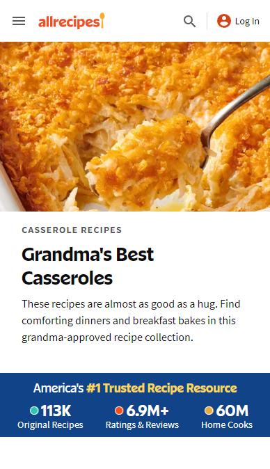

Repetition
Audible
Audible.comAudible demonstrates the principle of Repetition through color, shape, and content.
Color: The repeated use of the colors black, orange, and dusty blue throughout the page, from the navigation bar with their logo, to the carousel book covers, to their sales banner create a sense of cohesion.
Shape: The use of circles is a predominate theme, from the large orange circle contrasting the blue promoted book cover title, to the sun and “sale” heading in the sales banner, to the consistent use of rounded edges on each of the main elements on the page.
Content: The book carousel catches your eye with rotating book recommendations, then the next section advertises a sale on book credits, and the next is book category buttons. At each step you are called to take action to find new books to buy.
These uses of repetition create a clean and appealing experience for their audience.
Visual Hierarchy
All Recipes
Allrecipes.com All Recipes demonstrates the principle of Visual Hierarchy through images, colors, and fonts.
Images: An eye-catching photo is placed front and center, grabbing your attention right of the bat and tantalizing your taste buds.
Colors: The use of bright, complementary colors draw your eyes to their stats banner which reassures you that this is THE place to find food recipes, to their logo at the top, connecting the value they offer you with their brand.
Fonts: Through the use use of heavy and light fonts, your eyes are drawn from the featured recipe collection, to the collection's title, and down to the engaging paragraph content inviting you make a dish “almost as good as a hug.”
By guiding your eyes through use of images, colors, and fonts, you are lead to each piece of information you need, to be informed, pulled in, and called to action!
Fitt's Law
Google Flights
Google.com/travel/flightsGoogle Flights demonstrates Fitt’s Law through proximity, distance, and size.
Proximity: The most important fields on the page are placed right in the “Thumb Zone,” making it easy for mobile users to immediately engage in the primary services of the site.
Distance: The Explore button, is the closest button on the screen to your thumb, inviting you to jump right in and find fun destinations to fly to. Close by are the main input fields, making it super easy to search for flights. And, below the explore button, in easy reaching distance is the Tracked Prices section, making it easy to jump back into your highest interest flight options.
Size: Each main element, the explore button, flight search area, and tracked prices section, is sized so you can accurately click on the intended field with minimum effort and error rate.
Each of these optimizations decrease the effort needed to engage in their primary service and take action towards finding and booking a flight.